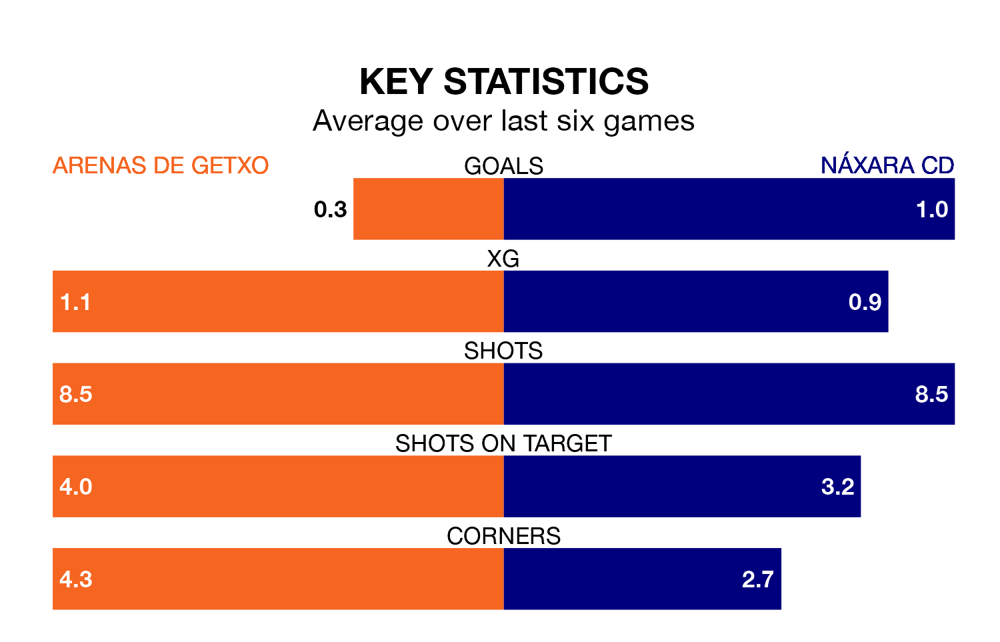

Arenas de Getxo are heavy favourites to keep all three points at home in Sunday's kick-off against Náxara CD.
Arenas de Getxo, who sit 14th in the Segunda División RFEF Group 2 with 21 games played, are priced at 1.6 to seal victory at Estadio Municipal de Gobela.
Sitting four places and eight points behind them in the table, Náxara CD are 5.0 to win with *Betting Company*, while the draw is at 3.4.
Arenas de Getxo are in bad form in the Segunda División RFEF Group 2, with no wins and four draws from their last six games.
With a win and two draws over that period, Náxara CD's form is slightly better – they have taken five points from 18, compared to the hosts' four.
With 14 goals in 21 games so far this season, Arenas de Getxo are scoring at below the league average rate with 0.7 goals per game. And they are conceding more than average, letting in 25 goals at a rate of 1.2 per game.
The away side are also below average scorers, with 0.7 goals per game, compared to a league average of 1.1. They have conceded 1.7 goals per game.
In the last three years, Arenas de Getxo and Náxara CD have played each other on three occasions. Arenas de Getxo won one of them and they drew the other.
Their last meeting was on October 1, when they played out a 0-0 draw.
Arenas de Getxo's last match was on February 4, a 0-0 draw against CD Tudelano.
Náxara CD drew 0-0 with AD San Juan last time out, also on February 4.
Updated: 11:43 (UTC), 08/02/24